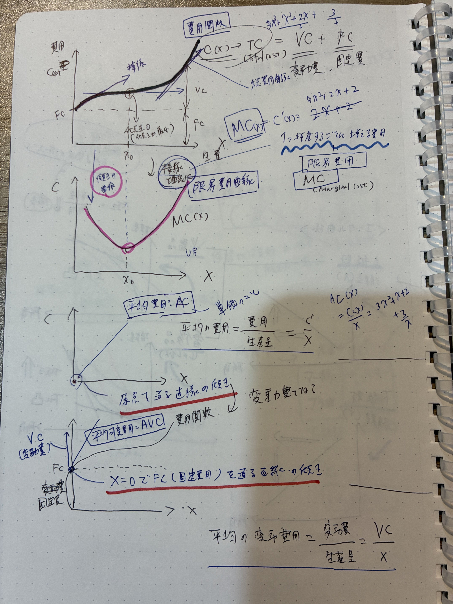
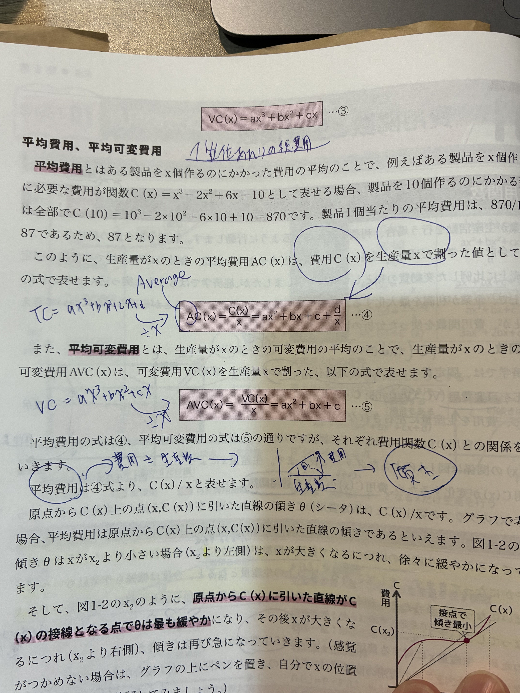
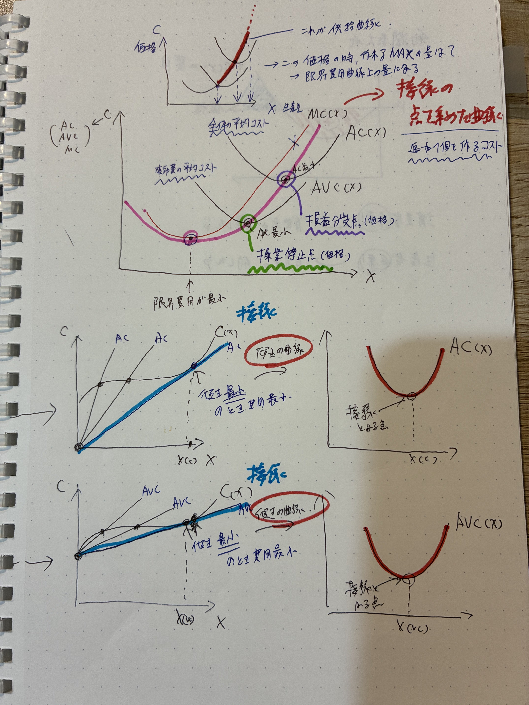
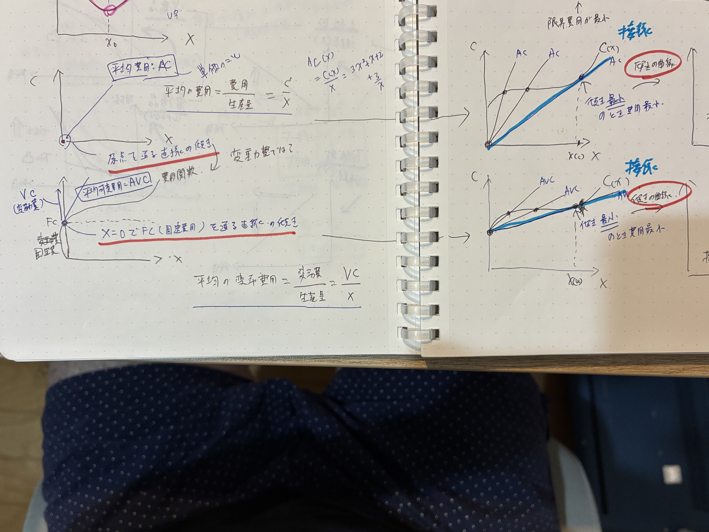
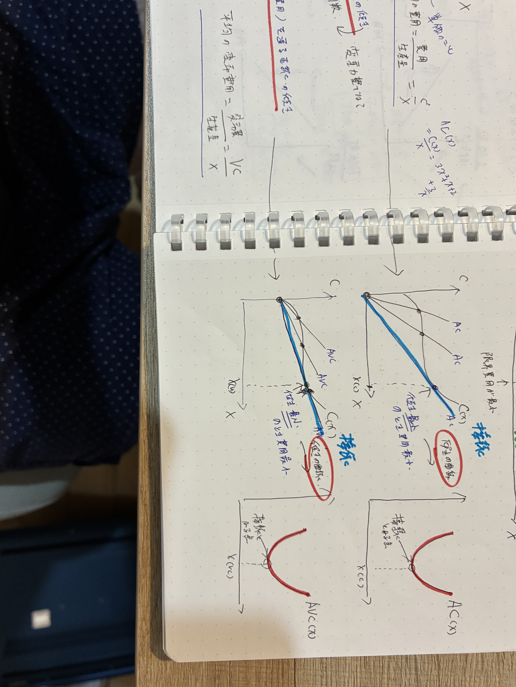
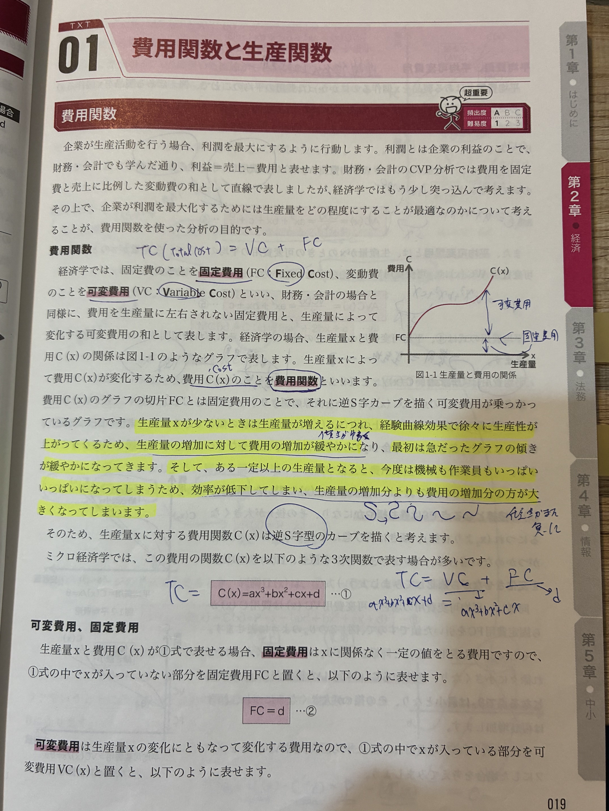

🐣 「会社の費用は2種類ある」
🧒
学習者
会社の費用ってお給料、家賃、材料費とかあるけど、何が違うの？🧑🏫
先生
大事なのは「生産量に応じて変わるか」。家賃のように生産量と関係なく毎月かかるのが 固定費（FC）、材料費のように作るほど増えるのが 変動費（VC）。🐣 6種類の費用
- TC＝総費用、VC＝変動費、FC＝固定費（TC=VC+FC）
- AC＝平均費用、AVC＝平均可変費用、MC＝限界費用
📊 固定費 FC と 変動費 VC のイメージ

📷 対応する手書きノート/教科書ページ：IMG_2396
生産量を増やしても FC（固定費） は変わらず、VC（変動費） だけ増える。両方足したのが TC（総費用）。
🌱 各費用の式
| 記号 | 名前 | 式 | 意味 |
|---|---|---|---|
| TC | 総費用 | TC = VC + FC | すべての費用 |
| VC | 可変費用 | VC(x) | 生産量xによって変わる費用 |
| FC | 固定費 | FC（定数） | 生産量に関係なく一定 |
| AC | 平均費用 | AC = TC/x | 1個あたりの総費用 |
| AVC | 平均可変費用 | AVC = VC/x | 1個あたりの変動費 |
| MC | 限界費用 | MC = dTC/dx | 1個追加で増える費用 |
VCはFCを含まない。「変動費」と「総費用」を区別すること。
📊 6種類の費用の関係（積み上げ＋平均）

📷 対応する手書きノート/教科書ページ：IMG_2403
📖 6種類の費用の関係
- 3つの「総額」：FC（固定費・定数）／VC(x)（変動費）／TC(x)＝FC+VC（総費用）
- 2つの「平均」：AC＝TC÷x／AVC＝VC÷x（共にU字）
- 1つの「微分」：MC＝dTC/dx（追加1個のコスト）
📘 費用関数の典型形
2次関数の場合
TC = ax² + 2x + 2
固定費FC=2、変動費VC=ax²+2x
3次関数の場合（典型的なU字AC）
TC = C(x) = ax³ + bx² + cx + d
FC=d、VC=ax³+bx²+cx
📘 限界費用 MC の意味
🔑 MC = 「1つ増やすごとにかかる費用」
MC = Marginal Cost。生産量を1単位増やすために追加で必要な費用。
MC = dTC/dx = TC'(x)
TCを生産量xで微分した値
📊 U字型 AC・AVC・MC（MCはAC,AVCの最低点を貫く）

📷 対応する手書きノート/教科書ページ：IMG_2397
📖 グラフの読み方
- 緑（MC）＝限界費用＝1単位追加で増えるコスト
- 赤（AC）＝平均費用＝TC÷x。最低点でMCと交差＝損益分岐点
- 橙（AVC）＝平均可変費用＝VC÷x。最低点でMCと交差＝操業停止点
- MC曲線は必ず AC・AVC の最低点を下から貫く（数学的必然）
🔍 平均費用と限界費用の図的関係
📐 接線の傾きで読める！
- AC＝原点を通る接線の傾き（C(x)曲線上の点と原点を結ぶ直線）
- AVC＝(0,FC)を通る接線の傾き（C(x)曲線上の点と(0,FC)点を結ぶ直線）
- MC＝C(x)曲線の接線の傾き（その点における瞬間の傾き）
「接線＝価格最小のとき費用最小」（重要）
AC曲線の最低点で原点からの接線が C(x) と接する → そのときの傾き＝最小のAC＝損益分岐価格。
AVC曲線の最低点で(0,FC)からの接線が C(x) と接する → そのときの傾き＝最小のAVC＝操業停止価格。
📊 AC・AVC は接線の傾きとして読める

📷 対応する手書きノート/教科書ページ：IMG_2398
📖 接線で読む方法（最重要テクニック）
- 原点(0,0) から C(x) に引いた接線の 傾き = AC（平均費用）。最も傾きが緩い接線がAC最小＝損益分岐価格
- (0,FC) から C(x) に引いた接線の 傾き = AVC（平均可変費用）。最も傾きが緩い接線がAVC最小＝操業停止価格
- なぜ接線で読める？ AC=C(x)/x は「(0,0)から(x,C(x))まで結んだ直線の傾き」と同じ。最小化は接線条件。
🔍 接点（変動費が増えだす点）
接点＝平均と限界が同じ点（AC=MC または AVC=MC の点）。
→ MC曲線は AC曲線とAVC曲線の 最低点を貫く。
→ MC曲線は AC曲線とAVC曲線の 最低点を貫く。
🔍 損益分岐点と操業停止点
| 点 | 条件 | 意味 |
|---|---|---|
| 損益分岐点 | P = ACの最小値 | 利潤がちょうど0（ここを下回ると赤字） |
| 操業停止点 | P = AVCの最小値 | これより下だと VCすら回収不可能なので動かすだけ損 |
💼 3つの重要点の「経営上の意味」
| 状態・点 | 収益（売上）でカバーできている範囲 | 経営上の意味（どんな状態？） |
|---|---|---|
| 限界費用 MC 最小点 （MCの底） |
「追加の1個」を最も安く作れている状態（売上1個あたりの粗利が最も拡大する瞬間）。 ※ただし、材料費などの直接的な費用は 一部のみ を賄えている状態。 |
費用の増え方が最小になる点（生産効率MAX）。習熟効果などで効率が上がりきった状態。ここを過ぎると、設備や人手の限界で1個あたりの追加コストが増え始める。 |
| 操業停止点 P=AVC最小 （黄信号の境界） |
「材料費などの直接的な費用」だけを賄えている。家賃などの 固定費は全く賄えていない。 | 会社を動かす「最低限の条件」。これより売上が低いと、材料費すら一部しか賄えず、作れば作るほど赤字が膨らむため 即座に休業すべき。 |
| 損益分岐点 P=AC最小 （プラス転換ライン） |
「すべての費用（材料費＋家賃など）」を賄えている。 赤字も黒字もない トントンの状態。 |
「利益が0」になる目標地点（固定費を賄える点）。ようやく固定費を全て回収できた瞬間。ここから先が本当の「儲け」 になり、経営が安定し始める境界線。 |
📊 価格水準で見る「費用カバーの段階」
✍️ ノートの青文字・手書きメモ
IMG_2396：費用関数の基本式
ノート：TC=VC+FC、MC=Marginal Cost、AVC=VC/x
- TC = VC + FC = 変動費 + 固定費
- MC = Marginal Cost = 1つ増やすごとにかかる費用
- 2次：TC=ax²+2x+2／3次：TC=ax³+bx²+cx+d
- VC は FC（固定費）を含まない関数
IMG_2397：接点と限界費用
ノート：MC曲線がACの最低点を貫く ／ 「接点＝平均と限界が同じ点」
- 接点＝平均と限界が同じ点（MC=ACの点）
- 「2つの値段が取られる点」
- 限界費用が頂点に達する
IMG_2398：AC・AVCの図的解釈
ノート：AC＝原点接線の傾き／AVC＝(0,FC)接線の傾き／青囲み「接線」
- AC＝原点を通る接線の傾き（C(x)曲線との接点）
- AVC＝(0,FC)を通る接線の傾き
- 接線＝価格最小のとき費用最小（損益分岐点・操業停止点の図的意味）
IMG_2399：接線の使い分け

ノート：青ハイライト「接線」＋ AC/AVC の最低点で接線が C(x) と接する
IMG_2401：損益分岐点・操業停止点

教科書 SHEET01：損益分岐点／操業停止点／VC回収不可
- 採算分岐点（損益分岐点）：P = AC最小値
- 操業停止点：P = AVC最小値
- VCすら回収不可能なので動かすだけ損（操業停止の根拠）
IMG_2402〜2403：式の整理

教科書：TC = C(x) = ax²+bx+c や ax³+bx²+cx+d の整理
教科書：AC(x)=C(x)/x ／ AVC(x)=VC(x)/x
🔑 これだけは押さえる
- TC = VC + FC、MC = dTC/dx
- MC曲線は AC・AVC の 最低点を貫く
- AC＝原点接線の傾き、AVC＝(0,FC)接線の傾き
- 損益分岐点：P=AC最小、操業停止点：P=AVC最小
- P<AVC最小 → 操業しても VC すら回収不能 → 操業停止
✏️ 穴埋め演習
基礎
① TC = VC + FC
② MC = dTC/dx（TCの微分）
③ AC = TC/x、AVC = VC/x
④ AC＝原点を通る 接線の傾き
⑤ MC曲線は AC・AVC の 最低点 を貫く
⑥ 損益分岐点：P = AC最小値、操業停止点：P = AVC最小値
❓ ミニクイズ
Q1
操業停止点の条件として正しいのはどれか。
P<AVC最小値 だと変動費すら回収できないので操業停止が正解。AC最小は損益分岐点。
Q2
TC=x²+4x+10 のとき MC は？
MC=dTC/dx=2x+4。FC=10は微分で消える。